Every DOOM OS control on one page. Anything not listed here works as it does on a stock SP-404MKII.
Open DOOM OS
HoldREMAIN+pressSUB PAD
This works from any screen. Press EXIT to close DOOM OS and save your changes.
These steps create a new pattern and give it its first track.
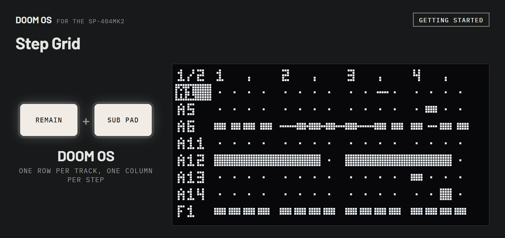
Press RECORD SETTING to open the menus (see TRACK Page and PATTERN Panel).
Existing patterns: after you switch on the SP-404MKII, a saved pattern can be edited only once it has played. Press PATTERN SELECT to play it first; until then, tapping the pads changes nothing.
Switching while it plays: hold PATTERN SELECT and press another pattern's pad. The playing pattern plays to its end, then the new one starts. Until then the screen shows NEXT: A2, and the playing pattern cannot be edited, recorded or bounced. To switch at once, hold SUB PAD as well; with REC on, the new pattern always starts at once. Stopping playback does not cancel the switch: the next start plays the pattern to its end first. To cancel it, select a pattern while playback is stopped.
On the step grid, CTRL 1, CTRL 2 and CTRL 3 set the velocity, length and nudge of notes. Turn a knob with no pad held to set every note on the selected track to the same value. Hold a step's pad while you turn to change that note only.
Turn VALUE to select the track, then turn a knob.
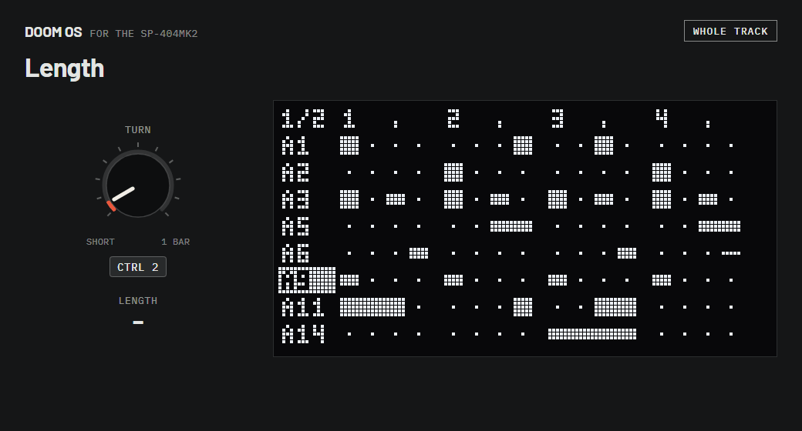
| CTRL 1 | Velocity of every note |
|---|---|
| CTRL 2 | Length of every notein the same steps as for one note |
| SHIFT+CTRL 2 | Length of every note, finein the same fine steps as for one note, each from its own length |
| CTRL 3 | Nudge of every noteat the center position, every note is exactly on its step |
Hold the step's pad and turn a knob.
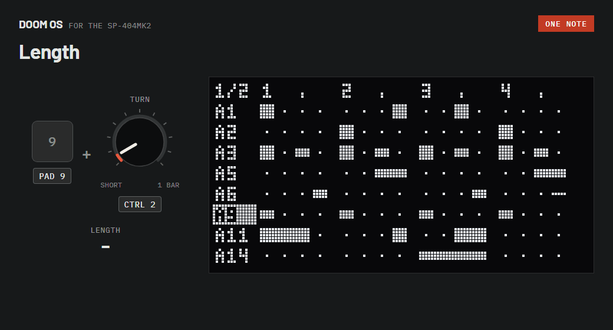
| CTRL 1 | Velocity |
|---|---|
| CTRL 2 | Lengthfrom 1/24 of a step to a whole bar, in steps of 1/24 of a step up to one step, 1/12 up to 4 steps, 1/8 up to 9 steps and 1/4 up to a bar; shown in steps: LEN 1.50 |
| CTRL 3 | Nudgeearlier or later; at the center position, the note is exactly on its step |
| SHIFT+CTRL 1 | Pitchup to 12 semitones up or down |
| SHIFT+CTRL 2 | Length, finefrom the note's own length, in steps of 1/60 of a step below one step, 1/24 up to 4 steps and 1/8 above |
Note values: while you hold a pad, the top line shows the note's VEL (velocity), LEN (length in steps) and NDG (nudge). Turn a knob with no pad held and the top line shows the selected track's values for two seconds; a value its notes do not share shows as --.
Keep a note selected: hold its pad and press REMAIN. The note stays selected after you release the pad. Press REMAIN again to deselect it.
Undo: each knob turn is one undo step. Press SHIFT+PATTERN SELECT to undo it.
Knob response: the SP-404MKII's Edit Knob Mode setting (SHIFT+pad 13 › SYSTEM › GENERAL, on the SP-404MKII's own screens) sets whether a knob changes a note at once (Direct) or only after it passes the note's current value (Catch). With no pad held, a track whose notes share the value works the same way. A track whose notes differ changes once the knob has turned a little, so touching it by accident leaves the notes as they are.
The step grid has five views. Press SHIFT+RECORD SETTING to select the next one; its name appears over the header. DOOM OS opens in the view you selected last.
| GRID | Eight tracks, one column per step |
|---|---|
| LABELS | A line between the track names and the steps |
| BEATS | Dotted lines between the beats |
| BOTH | Both lines |
| ZOOM | Four tracks, larger, each note drawn at its exact position and lengthhold REMAIN and turn VALUE to zoom: one beat, one bar or two bars |
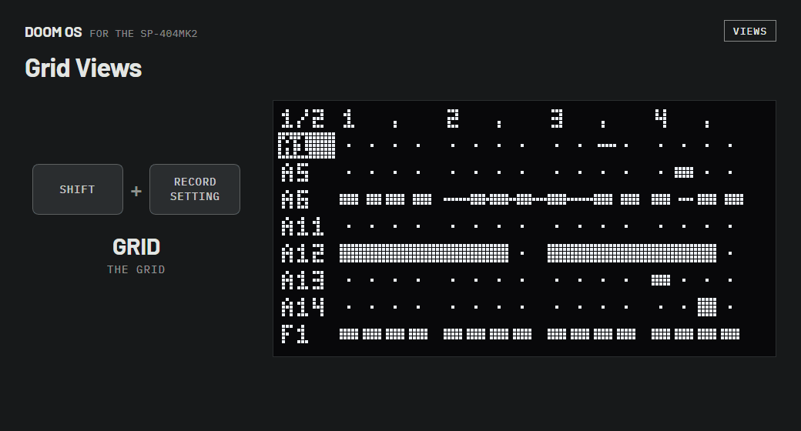
Bars: hold SHIFT and turn VALUE to select the next or previous bar. In the ZOOM view at one beat, this selects the next or previous beat.
Follow: while a pattern plays, the grid follows the playhead from bar to bar. Press SHIFT+HOLD to stay on the selected bar (FOLLOW: OFF); press it again to follow the playhead (FOLLOW: ON).
The piano roll shows the pitch of every note on the selected track.
The keys are laid out as in the SP-404MKII's CHROMATIC MODE: pad 5 plays the original pitch, and the pitch rises one semitone per pad, from left to right in each row and from the bottom row to the top. Hold SHIFT and turn VALUE to select another track.
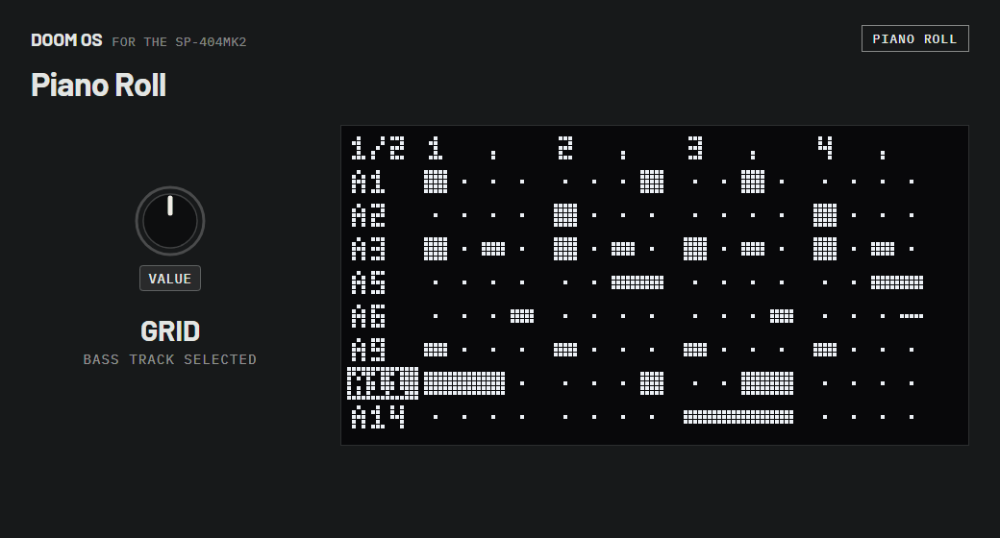
DOOM OS records what you play on the pads into the pattern while it plays.
Each take is one undo step: press SHIFT+PATTERN SELECT to undo it. The record mode sets what the pads play and which track they record to:
| SINGLE | Every pad plays and records the selected track's sound |
|---|---|
| MULTI | Each pad plays and records its own track |
| CHROMATIC | The pads play the selected track's sound as a keyboard, laid out as in the SP-404MKII's CHROMATIC MODE: pad 5 plays the original pitch |
| 16 VEL | The pads play the selected track's sound at sixteen velocities, laid out as in the SP-404MKII's 16 VELOCITY: pad 4 is the loudest, 127, and pad 13 the softest, 1 |
SINGLE, CHROMATIC and 16 VEL need a selected track; without one, the pads play nothing and the screen shows PICK A SAMPLE. Select the record mode in the PATTERN panel, or with the shortcut:
Press RECORD SETTING twice to open the PATTERN panel, turn VALUE to REC, and press VALUE to select the next mode.
During rehearsal or recording, press SHIFT+REC to select the next mode.
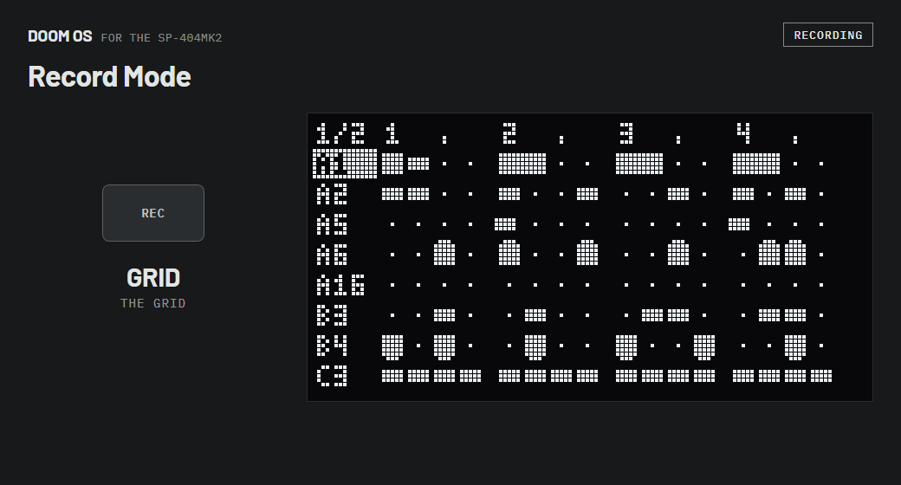
Metronome: press SHIFT+pad 9 to select ON (clicks during rehearsal and recording), RECPLAY (clicks whenever the pattern plays) or OFF.
Input quantize: press SHIFT+PATTERN EDIT to open NEW NOTES, the settings for recorded notes: QNT (quantize grid), SWG (swing), VEL (live or fixed velocity) and LEN (live or fixed length).
HOLD: REC turns HOLD off, and HOLD does nothing while REC is on.
DOOM OS records the selected track, or everything you hear, with its effects onto an empty pad you tap. A track bounced this way is put in place: its notes are replaced by one note of the new pad.
Press RECORD SETTING to open the TRACK page and select EDIT › BOUNCE... for the selected track, or PATTERN › BOUNCE... for everything you hear. Then turn VALUE to CUT, TAIL or LOOP, tap an empty pad and press RESAMPLE or VALUE.
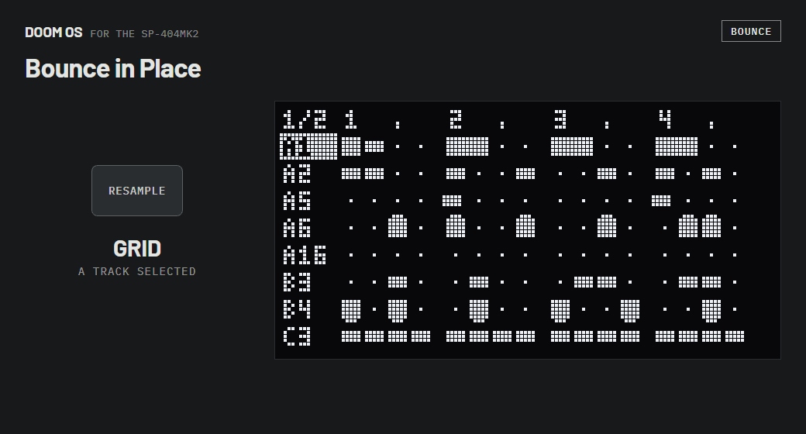
| CUT | The pattern's length |
|---|---|
| TAIL | The pattern, then on until the effects have rung out (30 seconds at most) |
| LOOP | The pattern's length, taken from its second pass, so the sample loops as the pattern does |
The card: its first line names what is bounced, BOUNCE TRACK C9 or BOUNCE MIX; its second says what becomes of the pattern once you tap a pad: C9 -> C10 for a track, KEEP ORIGINAL PATTERN for everything you hear. It opens on the tail you bounced last. EXIT closes it without recording.
The new pad: the pad you tap. A pad with a sample, or with notes in the pattern, is refused with PAD IN USE, so nothing on another pad is overwritten. A track whose pad holds no sample cannot be bounced: EMPTY PAD. With nothing to bounce, the screen shows TRACK EMPTY or PATTERN EMPTY. The new pad is named BOUNCE and the track's pad, or the pattern's pad for everything you hear. When the bounce ends, the screen names it, for example BOUNCED TO C10.
In place: a track's bounce plays the track solo, then replaces its notes with one note of the new pad on the first step. Press SHIFT+PATTERN SELECT to undo it; the old sample stays on its pad. C10, TRACK KEPT means the bounce is on C10, but the pattern was too large for the undo, so the track was left as it is. A bounce of everything you hear leaves the pattern unchanged.
Stop: press EXIT to stop a bounce. Stopping the pattern, selecting another pattern or turning REC on stops it too; the screen shows BOUNCE STOPPED and no pad is written.
A mono sample bounces as a mono sample when it plays in the middle with no effect on its bus, so the new pad starts exactly when the track did. Panned, or through an effect that is on, it bounces in stereo, as you hear it.
DOOM OS has 20 built-in instruments, from drums to synths, and 11 drum kits. An instrument is loaded onto a pad and plays like a sample on every screen of the SP-404MKII. DOOM OS also saves the instrument's sound to the pad as a sample, so the pad plays in the stock firmware too.
Press EXIT in the browser to return to the grid without loading an instrument. Kits are not previewed.
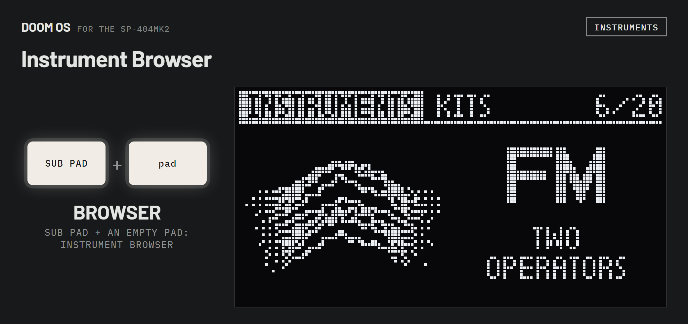
The instrument editor sets the instrument's parameters, section by section. To open it for an existing instrument, select its track on the grid and press START/END. START/END lights when the selected track is an instrument track.
In the editor, the pads show the track's steps; tap a pad to turn a step on or off. Blue pads are steps with their own parameter values (see Parameter Locks).
To replace the instrument, press REMAIN in the editor. The browser opens at the current instrument. Turn VALUE to select another instrument: the track plays it at once, also while the pattern plays, and SUB PAD previews it. Nothing is saved yet. Press VALUE to keep the selected instrument. The question names the current instrument, for example REPLACE KICK: turn VALUE to YES and press VALUE. The notes stay on the track and play the new instrument at its default parameters; the previous instrument's parameter values are not kept. Press EXIT in the browser to return to the editor with the original instrument.
To remove an instrument from its pad, delete the pad's sample on the SP-404MKII's own screens: press EXIT to leave DOOM OS, hold DEL, press the pad, and press VALUE. This deletes the instrument's sound from the pad and cannot be undone. The pad is empty again, so hold SUB PAD and tap it to open the instrument browser. The notes stay on the track; to delete them, press DEL on the grid.
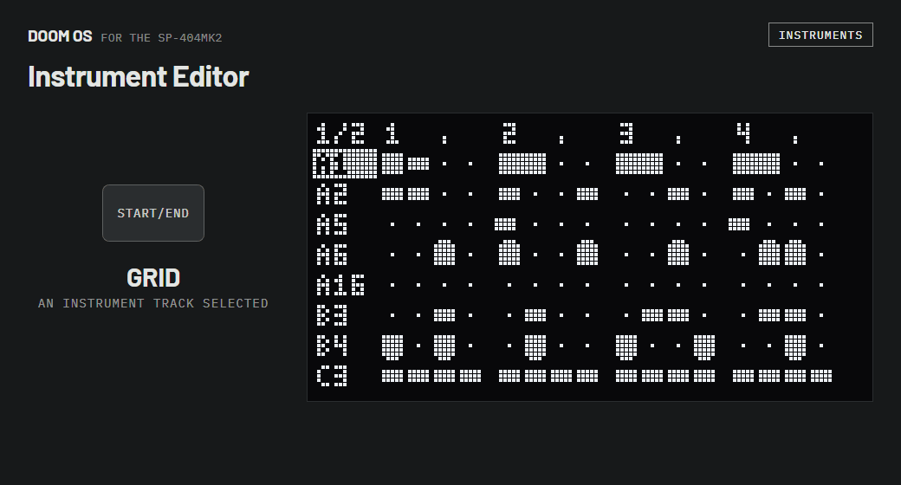
Chromatic mode plays the instrument from the pads at different pitches while you edit it.
In the instrument editor, hold SHIFT and press pad 4; the screen shows CHROMATIC ON. The pads are laid out as in the SP-404MKII's CHROMATIC MODE: pad 5 plays the instrument's original pitch, and the pitch rises one semitone per pad, from left to right in each row and from the bottom row to the top. A note sounds while you hold its pad. Nothing is recorded, and the knobs still edit the sound.
Press a BANK button to select the octave: C/H is the instrument's own octave, B/G and A/F are one and two octaves down, and D/I and E/J one and two octaves up. The selected octave's button lights. An instrument plays up to two octaves above or below its original pitch, so in the lowest and highest octaves about half of the pads stay dark and silent. Hold SHIFT and press pad 4 again to turn chromatic mode off; leaving the editor also turns it off.
A drum kit loads a set of drum sounds into a bank, one sound per pad.
Loading into a bank that holds samples: DOOM OS asks first (OVERWRITE BANK A). YES deletes every sample in the bank, including the pads the kit leaves empty, and loads the kit; this cannot be undone. NO leaves the bank unchanged.
Protected banks: a protected bank cannot be loaded; the screen shows BANK PROTECTED.
Knob response: the SP-404MKII's Edit Knob Mode setting (SHIFT+pad 13 › SYSTEM › GENERAL, on the SP-404MKII's own screens) sets whether a knob changes a parameter at once or only after it passes the current value.
The SP-404MKII's own pad tools: an instrument's pad can be renamed, and START/END, TRUNCATE, NORMALIZE and EMPHASIS can be used on it on the SP-404MKII's own screens. The pad stays an instrument: DOOM OS plays the instrument as before, and the SP-404MKII's own screens play the pad's sample as the tool left it. A pad that DOOM OS 0.7.3 silenced after a rename or START/END is an instrument again after the update.
COPY and EXCHANGE: the SP-404MKII's own COPY and EXCHANGE of a pad take the instrument with the pad, also to another project. A copied instrument sounds like its original until you edit either of them; from then on each has its own sound. The track's EQ stays with the track and does not move with the pad. DEL removes the instrument (above).
Export, import and backup: a project's instruments, parameter locks and EQ go with the project when you export, import or copy it (COPY PROJECT), and BACKUP and RESTORE also carry the DOOM OS settings. Restoring a backup made with the stock firmware or an earlier DOOM OS keeps the instruments and EQ that are on the SP-404MKII, and importing a project exported with them keeps the instruments the SP-404MKII has for that project number. To take a project's instruments and EQ to another SP-404MKII, export and import the project on the SP-404MKII itself.
Set instrument parameters independently for each step: tune a kick differently on every beat, or lengthen the decay on one step only. Parameter locks work on instrument tracks, whose pad holds a DOOM OS instrument.
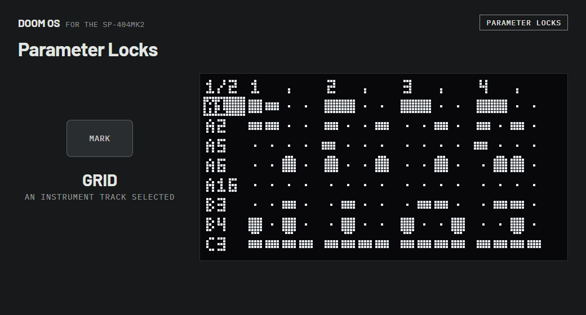
Press DEL to reset the selected step to the instrument's parameters. To start on a particular step, hold its pad when you press MARK on the grid.
Only what you change is locked: a step keeps the parameters you set on it. Its other parameters follow the instrument, so later changes to the instrument's sound still reach them.
A lock belongs to its note: when the note moves to another step, its parameter lock moves with it -- with the SHIFT tool of the Pattern Tools, and with the stock QUANTIZE, DUPLICATE and CROP. SWAP PAD, COPY and PASTE of a track keep the locks with its notes within a project, and an undo brings a deleted note back with its lock. When QUANT puts two notes of a track on one step at the same pitch, the louder one stays, with the lock of the other if it has none of its own; the notes of a chord all stay. A copied pattern keeps the locks of the original in the same project, also with the stock COPY and EXCHANGE; a pattern or a track copied to another project arrives without them. When you change the locks of one copy, the other keeps its own.
Playback: parameter locks play when the pattern plays the note, not when you strike the pad by hand. The stock firmware plays the instrument's own sound on every step, without the locks.
Limits: a project holds up to 4096 parameter locks, and one editing session changes up to 64 steps. Past that, the screen shows STEPS FULL, and SWAP PAD and PASTE move the notes without their locks. One track holds up to 126 locks in a pattern; a lock past that stays on its step and does not move with its note.
The arpeggiator plays the notes you hold one after another, in time with the tempo. On the ARP screen, the pads are a keyboard for the selected track's sound, in the key and scale you select.
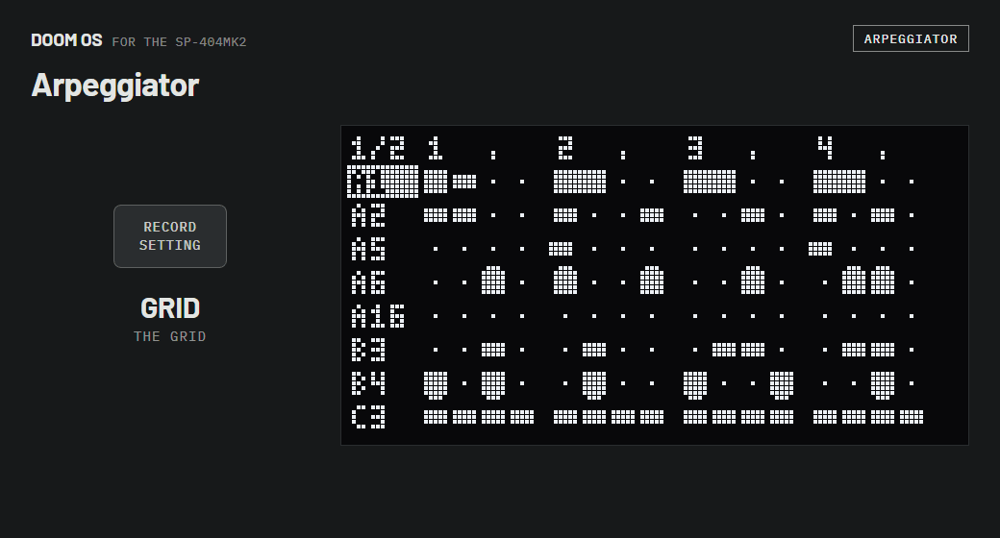
Turn VALUE to switch between the PLAY and PITCH pages. Hold SHIFT while you turn a knob for finer steps.
| CTRL 1 | TYPE on the PLAY page, KEY on the PITCH pageTYPE: UP, DOWN, U/D (up and down), RND (random), ORD (the order you pressed the pads), CHRD (all notes together), CONV (from the outside in), DIV (from the middle out), PNKY (each note followed by the highest), THMB (the lowest followed by each note) or U/D+ (up and down, the highest and lowest notes played twice). KEY: C to B |
|---|---|
| CTRL 2 | RATE / SCALERATE: 1/4 to 1/32, with triplets. SCALE: 40 scales, among them CHR (chromatic), MAJ, MIN and DOR |
| CTRL 3 | GATE / OCTGATE: the length of each note, 1 to 100%. OCT: the held notes repeated up to three octaves up or down |
PRINT ARP... writes the arpeggio into the selected track as notes.
Printing replaces every note on the track over the whole pattern, and turns HOLD off. Press SHIFT+PATTERN SELECT to undo it, unless the screen shows ARP PRINTED, NO UNDO. With no notes held, the screen shows NO ARP.
Clear the track: press DEL on the ARP screen, or select CLEAR... under GENERATE. After a confirmation (CLEAR TRACK A5), every note on the track is deleted.
Settings: the arpeggiator's settings are kept until you switch off the SP-404MKII. Loading another project stops a held arpeggio.
Instrument editor: on an instrument track, press START/END to open the instrument editor; press EXIT to return to ARP.
The pattern tools edit all notes of the pattern, or of one track, in one step.
| QUANT | Quantize notes to a grid1/4, 1/4T, 1/8, 1/8T, 1/16, 1/16T or 1/32 |
|---|---|
| SWING | Swing, 50 (straight) to 75hold SHIFT and turn VALUE to swing 16th or 8th notes |
| SHIFT | Move notes by whole steps, −16 to +16notes moved past the end wrap round to the start |
| DOUBLE | Double the pattern length, repeating its notes and effect movementsapplied at once; always the whole pattern |
| HALVE | Halve the pattern length; the second half is deletedapplied at once; always the whole pattern |
| REVERSE | Reverse the notes: the first step becomes the lastapplied at once |
| HUMAN | Vary the timing and velocity of every note at random, 1 to 30 |
| TRANSP | Transpose notes, −12 to +12 semitones |
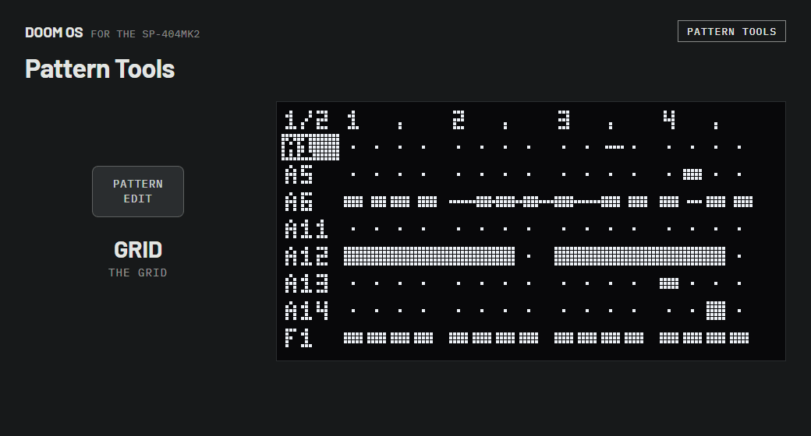
Undo: each tool is one undo step. Press SHIFT+PATTERN SELECT to undo it.
Limits: DOUBLE is not possible past 64 bars or 512 notes, and HALVE not on a one-bar pattern; the screen shows NOT POSSIBLE.
NEW NOTES: SHIFT+PATTERN EDIT opens the settings for recorded notes (see Recording).
The mixer shows every track of the pattern as a channel strip, with its pan, bus and level.
To open the mixer, hold RECORD SETTING for 0.6 seconds, or press RECORD SETTING, turn VALUE to MIXER and press VALUE. Turn VALUE to select a track, then set its pan, bus and level:
CTRL 1 sets the pan, CTRL 2 the bus (B1, B2 or DRY) and CTRL 3 the level. A knob sets the value at its position at once.
Press VALUE to select pan, bus or level in turn, and turn VALUE to change the value one step at a time. Press EXIT to deselect it.
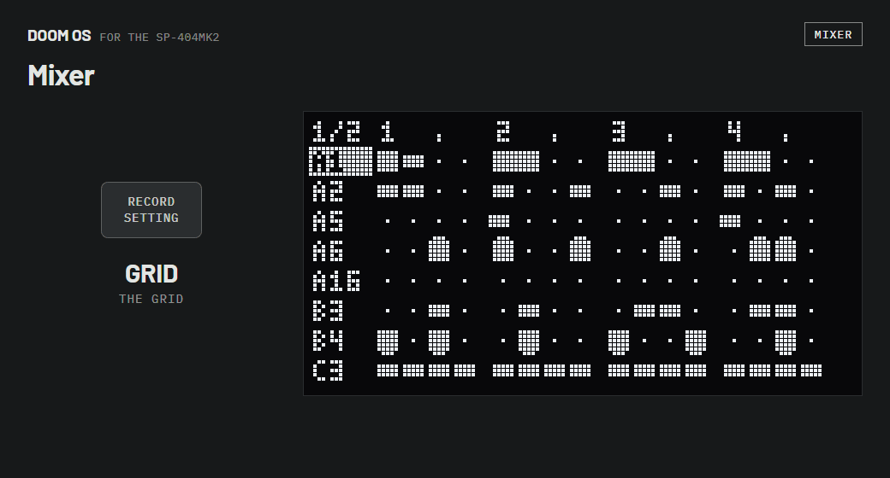
Saving: pan, bus and level are the pads' own settings, so the SP-404MKII plays them everywhere. They are saved with the project when you leave the mixer. Setting the pan of a pad set to MONO turns MONO off.
Display style: press SHIFT+RECORD SETTING to select ARROWS, DITHER, ARROWS + NAMES or DITHER + NAMES. With NAMES, the selected strip's full name appears above it for two seconds when you select another strip.
Mute and solo: hold SHIFT and press VALUE to mute or unmute the selected track; press SHIFT+ROLL to play it solo. In the mixer, tap a pad to mute or unmute it, as with SHIFT+REVERSE on the SP-404MKII: a muted pad lights red, a track of the pattern white, another pad with a sample dim white, and the BANK buttons select the bank. Hold REMAIN and press a track's pad to play that track solo, and again to turn solo off. Press EXIT to return to the grid.
Every pad can have its own 3-band EQ: LOW, MID and HIGH. You set it in the mixer, and its curve shows above the mixer's strips.
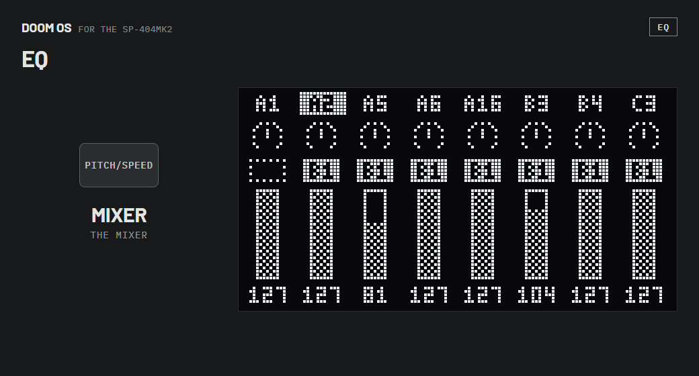
| CTRL 1 | GAIN-12 to +12 dB |
|---|---|
| CTRL 2 | FREQ20 Hz to 20 kHz; LOW starts at 100 Hz, MID at 1.2 kHz, HIGH at 8.0 kHz |
| CTRL 3 | Q0.3 to 10: the width of MID, the slope of LOW and HIGH |
Fine steps: hold SHIFT while you turn a CTRL knob.
Sixteen pads: up to sixteen pads can have an EQ at a time. A pad with all three gains at 0 dB has none. When sixteen pads have one, the gain of a seventeenth pad stays at 0 and the screen shows EQ: 16 PADS.
The pad's EQ: the EQ belongs to the pad, so you hear it in every pattern and on every screen that plays the pad, the SP-404MKII's own screens included. It works on samples and instruments. The mixer's meters and the waveform display show the sound before the EQ.
Saving: each project keeps its own EQ. It is saved when you hide the EQ display or leave the mixer, and it goes with the project when you export, import, copy or back up the project (see Instruments and Kits).
The waveform display shows the last two seconds of audio across the top of the grid or the mixer, with the newest audio on the right.
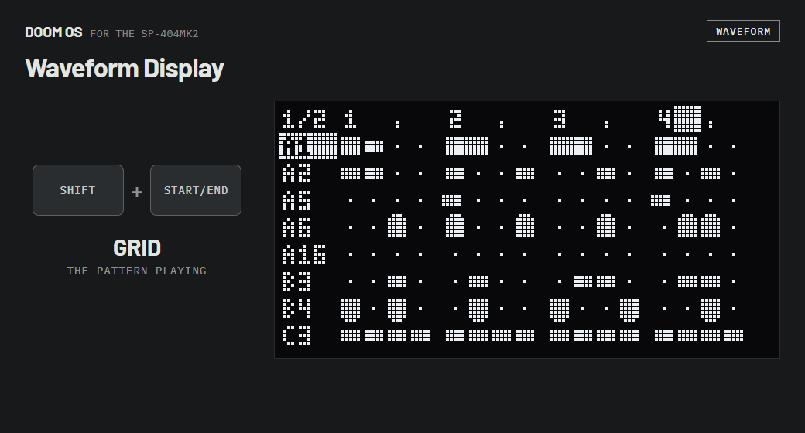
Layout: the grid moves down under the waveform display, and the mixer's strips get shorter. The display stays open when you switch between the grid and the mixer.
Signal: OUT is the mix before the effects. A track shows its pad's audio at the track's level, before pan and the effects; a muted track shows a flat line. When you select another track, its waveform starts again from the right.
The FX buttons work as on the stock SP-404MKII, except that the effect's page stays open until you close it.
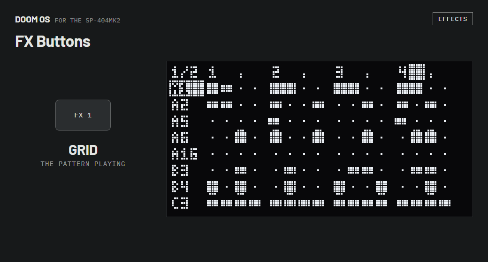
Reopen a page: hold REMAIN and press FILTER+DRIVE to DJFX LOOPER to open the page of an effect that is on, without turning it off. This works for the effects on the bus that BUS FX has selected.
Bus effects: SHIFT+pad 16 opens the SP-404MKII's bus effects settings. Press EXIT to return to DOOM OS; the pattern keeps playing. While REC is on, the screen shows NOT POSSIBLE.
Record effect movements: with an effect's page open, press REC twice and turn the knobs. The movements are recorded into the pattern (see FX Automation).
The side chain turns one bus down while another bus plays, for example the bass while the kick hits. The SIDECHAIN screen shows the SP-404MKII's side chain on a picture of the buses: D (DRY) and BUS 1 to BUS 4 into the output, routed as the SP-404MKII routes them.
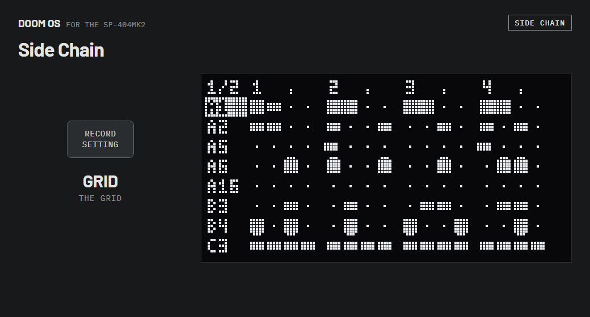
| CTRL 1 | THR, THRESHOLDhow loud the source must be before the target is turned down |
|---|---|
| CTRL 2 | RAT, RATIOhow far the target is turned down; the highest values silence it |
| CTRL 3 | REL, RELEASEhow fast the target comes back |
GAIN: turn VALUE to GAIN and press VALUE, then turn VALUE to raise the target's level after the side chain, 0.0 to 6.0 dB. Press VALUE again to finish. THR, RAT and REL can be edited the same way.
Turn the side chain off: hold DEL and press VALUE on the source or the target bus.
Over time: press SHIFT+RECORD SETTING to show how far the target is turned down over the last moments; press it again for the picture of the buses.
The SP-404MKII's own setting: the SIDECHAIN screen sets the same side chain as the SIDE CHAIN tab of the bus effects settings (SHIFT+pad 16). It applies to every project.
FX Automation shows the effect movements recorded in the pattern for the bus that BUS FX has selected: a row for each FX button and a column for each of its parameters.
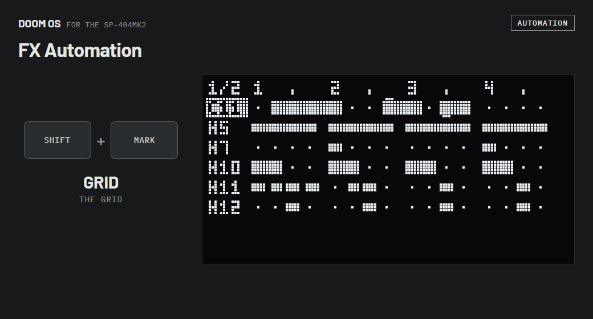
EFX MOTION PLAY: press START/END to turn the SP-404MKII's EFX MOTION PLAY on or off; the recorded movements play only while it is on, and START/END lights. An edit turns it on. Turning it off also turns off the effects of both buses.
On a step: in the one-parameter view, the row's own FX button turns the effect on or off at the selected step.
Delete an effect: hold DEL and press an FX button to delete everything of that effect on this bus: its movements and every time the pattern switches it on or off. DEL+MARK deletes every effect movement of the pattern, on both buses, as on the SP-404MKII's own pattern edit screen. The notes and pad mutes stay. While you hold DEL, the FX buttons and MARK light up.
Help mode shows what each control does on the current DOOM OS screen.
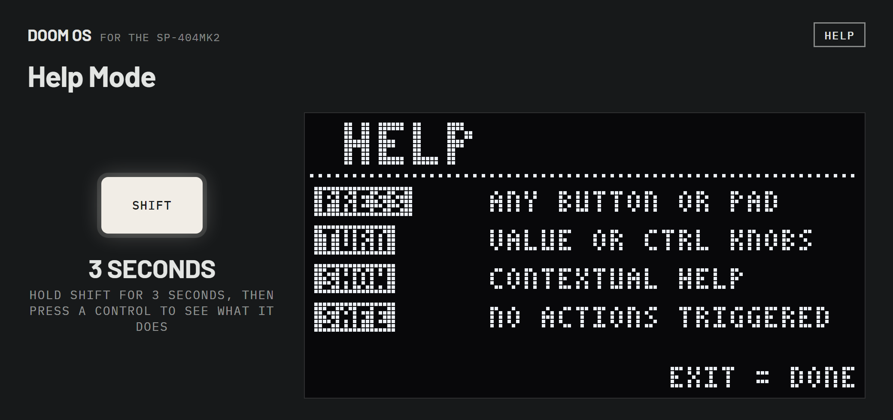
The DOOM OS tab of the SP-404MKII's SYSTEM screen holds the settings of DOOM OS.
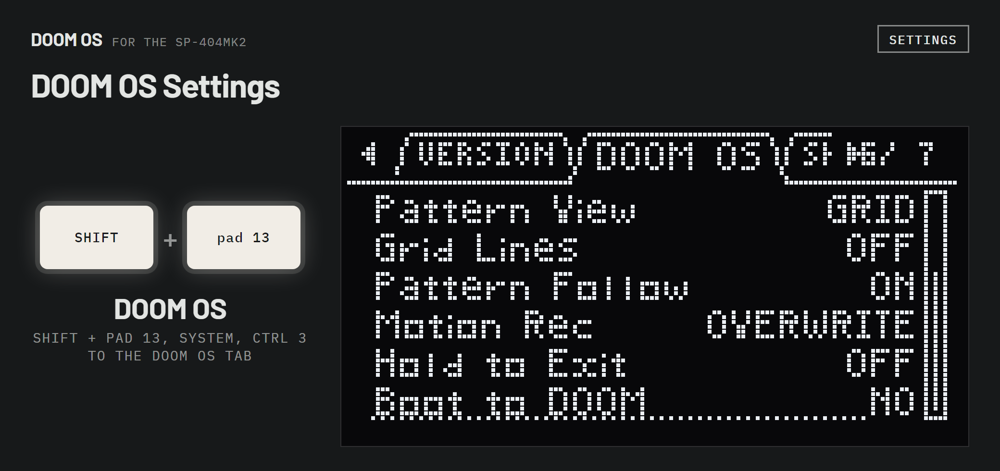
| Mixer Level | How the mixer shows a track's level: ARROWS next to the fader, or DITHER, a pattern inside itdefault ARROWS |
|---|---|
| Mixer Names | ON: when you select another strip, the mixer shows its name above itdefault ON |
| Boot Anim | The boot animation: GRAFFITI, VHS, HELLO, BUBBLE, SKETCH or HYPERSPACE, or RANDOM for a different one at each start-updefault VHS |
| Pattern View | The grid view: GRID, eight tracks, or ZOOM, four (see Grid Views)default GRID |
| Grid Lines | Guide lines on the grid: LABELS between the track names and the steps, BEATS between the beats, BOTH, or OFFdefault OFF |
| Pattern Follow | ON: while a pattern plays, the grid follows the playhead from bar to bar. OFF: the grid stays on the selected bardefault ON |
| Motion Rec | How a recorded effect knob is written (see FX Automation): OVERWRITE replaces the movements already there, OVERDUB adds to themdefault OVERWRITE |
| Hold to Exit | How long you hold EXIT to leave DOOM OS, from 0.1 to 1.0 seconds. DOOM OS closes as soon as you have held EXIT that long; a short press does not close it. OFF: a press of EXIT closes DOOM OSdefault OFF |
| Boot to DOOM | YES: DOOM OS opens by itself when the SP-404MKII has starteddefault NO |
Changed in DOOM OS: the grid view and its lines (SHIFT+RECORD SETTING on the grid), the mixer's display style (SHIFT+RECORD SETTING in the mixer) and Pattern Follow (SHIFT+HOLD) are also set in DOOM OS. These settings keep the last choice.
Custom shortcuts: the SHORTCUT tab, next to DOOM OS, holds up to eight shortcuts of your own.
Every DOOM OS control, grouped by feature. Many of these functions are also in the menus: press RECORD SETTING or PATTERN EDIT and turn VALUE. To check a control on the SP-404MKII itself, use help mode: hold SHIFT for three seconds, then press the control.
| Open DOOM OS | hold REMAIN+SUB PAD |
|---|---|
| Close DOOM OS | EXIT; with Hold to Exit set, hold EXIT that long |
| Open DOOM OS at start-up | Boot to DOOM on the DOOM OS settings tab: YES |
| Wake from the screensaver | any button or pad; the press does nothing else |
| Save | automatic: shortly after an edit, and when you open another pattern or press EXIT |
| Help mode | hold SHIFT for 3 seconds, then press a control |
| Undo, up to 11 steps | SHIFT+PATTERN SELECT |
| Redo | REMAIN+PATTERN SELECT |
| Start / stop playback | PATTERN SELECT |
| Open another pattern | hold PATTERN SELECT+pad; while a pattern plays, the new one starts when the playing one ends |
| Switch to another pattern at once while playing | hold PATTERN SELECT+SUB PAD+pad |
| New pattern | hold PATTERN SELECT+an empty pad |
| Pattern bank | hold PATTERN SELECT+BANK |
| Tempo | SHIFT+pad 11, turn VALUE, press VALUE |
| Tempo | RECORD SETTING twice › BPM |
A track is one pad in the pattern.
| Select a track | turn VALUE |
|---|---|
| Add a track | hold SUB PAD, tap pads, release SUB PAD |
| Add an instrument track | hold SUB PAD+tap an empty pad |
| Show the pads that hold a sample | hold SUB PAD |
| Hear the selected track | hold SUB PAD, in the mixer and wherever SUB PAD has no other use -- not on the grid, where it adds a track |
| The selected track's GATE, LOOP, REVERSE or BPM SYNC | GATE on any track; LOOP REVERSE BPM SYNC on a sample track; lit when on, LOOP blinking for a ping-pong loop |
| Samples from another bank | BANK, then hold SUB PAD |
| Same velocity for every note | CTRL 1 |
| Same length for every note | CTRL 2 |
| Same nudge for every note | CTRL 3 |
| Mute / unmute | SHIFT+press VALUE |
| Solo on / off | SHIFT+ROLL — ROLL blinks while a track plays solo |
| Copy the track's notes | COPY (a track with no notes: TRACK EMPTY, and what you copied before stays) |
| Paste onto the track | RECORD SETTING › EDIT › PASTE |
| Swap pad: the notes to another pad | RECORD SETTING › EDIT › SWAP PAD |
| Clear the track's notes | RECORD SETTING › EDIT › CLEAR... |
| Clear the whole pattern | RECORD SETTING › PATTERN › CLEAR... |
| Delete the track (asks first) | DEL |
The 16 pads are the 16 steps of the selected track.
| Step on / off | tap pad |
|---|---|
| Select a note | hold its pad |
| Keep a note selected | hold pad+REMAIN; REMAIN again to deselect |
| Velocity | hold pad+CTRL 1 |
| Length | hold pad+CTRL 2 |
| Length, fine | hold pad+SHIFT+CTRL 2 |
| Length of the whole track, fine | SHIFT+CTRL 2 with no pad held |
| Nudge | hold pad+CTRL 3 |
| Pitch | hold pad+SHIFT+CTRL 1 |
| Knob response: at once or after passing the value | the SP-404MKII's Edit Knob Mode: SHIFT+pad 13 › SYSTEM › GENERAL |
| Next / previous bar | SHIFT+turn VALUE |
|---|---|
| Pattern length in bars | RECORD SETTING twice › LENGTH. When notes lie past the new end, CROP TO 2 BARS asks first: YES deletes them, NO keeps the pattern unchanged |
| Time signature of a new pattern | set on the SP-404MKII's own RECORD SETTING screen before recording: SHIFT+CTRL 2 (TIME SIGN). DOOM OS shows it beside LENGTH. A pattern in 5/4, 6/4 or 7/4 shows the first 16 steps of each bar and cannot be edited (7/4: VIEW ONLY); a new pattern made in DOOM OS is then 4/4 |
| Follow playhead on / off | SHIFT+HOLD |
| Grid view: GRID, LABELS, BEATS, BOTH, ZOOM | SHIFT+RECORD SETTING |
| Zoom in / out (ZOOM view) | REMAIN+turn VALUE |
| Next / previous beat (ZOOM view, one beat) | SHIFT+turn VALUE |
| Open / close | press VALUE |
|---|---|
| Scroll up / down | turn VALUE |
| Set a step's pitch | hold its pad+press a pad as a key (pad 5 = original pitch) |
| Pitch, one semitone at a time | hold its pad+turn VALUE |
| Select another track | SHIFT+turn VALUE |
| Rehearse (nothing is recorded) | REC |
|---|---|
| Record | REC again |
| Stop recording | EXIT |
| Record mode: SINGLE, MULTI, CHROMATIC, 16 VEL | SHIFT+REC |
| Record mode: SINGLE, MULTI, CHROMATIC, 16 VEL | RECORD SETTING twice › REC |
| Record mode 16 VEL on / off | on the grid: SHIFT+pad 2 |
| NEW NOTES: quantize, swing, velocity, length | SHIFT+PATTERN EDIT |
| Pads play samples, not steps | HOLD |
| FIXED VELOCITY on / off | SHIFT+pad 1 |
| Metronome: ON, RECPLAY, OFF | SHIFT+pad 9 |
| Inputs on / off: line in, mic, USB audio | EXT SOURCE |
| Record effect movements | effect page open, REC twice, turn the CTRL knobs |
| Bounce the selected track in place | RESAMPLE |
|---|---|
| Bounce the selected track in place | RECORD SETTING › EDIT › BOUNCE... |
| Bounce everything you hear onto a new pad | SHIFT+RESAMPLE |
| Bounce everything you hear onto a new pad | RECORD SETTING › PATTERN › BOUNCE... |
| Choose CUT, TAIL or LOOP | turn VALUE |
| Choose the new pad | tap an empty pad |
| Start the bounce | RESAMPLE or VALUE |
| Close the bounce card | EXIT |
| Stop a bounce | EXIT |
| The track back after a bounce in place | SHIFT+PATTERN SELECT |
| Load an instrument onto an empty pad | hold SUB PAD+tap an empty pad, release SUB PAD, turn VALUE, press VALUE |
|---|---|
| Preview an instrument | in the browser: hold SUB PAD; turn VALUE while holding it for the next |
| INSTRUMENTS / KITS in the browser | SHIFT+turn VALUE |
| Load a kit into a bank | in the browser: select a kit, press VALUE, press a BANK button, press VALUE |
| Instrument editor | START/END |
| Replace the instrument | in the editor: REMAIN, turn VALUE, press VALUE, YES |
| Try other instruments on the track | in the editor: REMAIN, turn VALUE; EXIT returns to the original |
| Remove the instrument from its pad | outside DOOM OS: hold DEL+pad, press VALUE |
| Copy the instrument with its pad | outside DOOM OS: the SP-404MKII's own COPY of the pad, also to another project |
| Exchange two pads with their instruments | outside DOOM OS: the SP-404MKII's own EXCHANGE of the pads |
| Select a section | turn VALUE |
| Section parameters | CTRL 1 CTRL 2 CTRL 3 (hold SHIFT for finer steps) |
| Hear the pad | hold SUB PAD |
| Chromatic mode on / off | in the editor: SHIFT+pad 4 |
| Octave, in chromatic mode | BANK buttons: C/H the instrument's own, A/F B/G down, D/I E/J up |
| Close the editor and save the sound | EXIT |
On an instrument track.
| Start editing | MARK on the grid or in the instrument editor |
|---|---|
| Select a step | tap its pad |
| Select a section | turn VALUE |
| The step's parameters | CTRL 1 CTRL 2 CTRL 3 |
| Hear the step | hold SUB PAD |
| Save | MARK again |
| Reset the selected step | DEL |
| Discard the changes | EXIT |
| Open the arpeggiator | RECORD SETTING › ARP |
|---|---|
| Arpeggiator on / off | press VALUE |
| Hold the arpeggio | HOLD |
| PLAY / PITCH page | turn VALUE |
| TYPE, RATE, GATE | PLAY page: CTRL 1 CTRL 2 CTRL 3 |
| KEY, SCALE, OCT | PITCH page: CTRL 1 CTRL 2 CTRL 3 |
| Finer steps | SHIFT+turn a CTRL knob |
| Instrument editor | START/END |
| Print the arpeggio into the track | RECORD SETTING › GENERATE › PRINT ARP... |
| Clear the track's notes | DEL, or RECORD SETTING › GENERATE › CLEAR... |
| Return to the grid | EXIT |
PATTERN EDIT, turn VALUE to a tool, press VALUE.
| Quantize | PATTERN EDIT › QUANT |
|---|---|
| Swing | PATTERN EDIT › SWING |
| Swing on 8th notes | in SWING: SHIFT+turn VALUE |
| Move notes by whole steps | PATTERN EDIT › SHIFT |
| Double the pattern | PATTERN EDIT › DOUBLE |
| Halve the pattern | PATTERN EDIT › HALVE |
| Reverse | PATTERN EDIT › REVERSE |
| Humanize | PATTERN EDIT › HUMAN |
| Transpose | PATTERN EDIT › TRANSP |
| Tools on one track only | PATTERN EDIT, tap the track's pad |
hold RECORD SETTING for 0.6 seconds, or RECORD SETTING › MIXER
| Select a track | turn VALUE |
|---|---|
| Pan | CTRL 1 |
| Bus: B1, B2 or DRY | CTRL 2 |
| Level | CTRL 3 |
| Pan, bus or level with VALUE | press VALUE to select, turn VALUE to change |
| Mute / unmute | SHIFT+press VALUE |
| Mute / unmute a pad | tap the pad |
| Solo on / off | SHIFT+ROLL |
| Solo a track on / off | REMAIN+its pad |
| Display style: ARROWS, DITHER, with or without NAMES | SHIFT+RECORD SETTING |
| Return to the grid | EXIT |
in the mixer
| Show / hide the EQ display | PITCH/SPEED |
|---|---|
| Select a track | turn VALUE |
| Open the EQ screen | press VALUE on the EQ display |
| Open the EQ screen and set a band | turn CTRL 1 CTRL 2 CTRL 3 on the EQ display |
| LOW, MID and HIGH gain | CTRL 1 CTRL 2 CTRL 3 |
| ADV on / off | press VALUE on the EQ screen |
| Select a band on ADV | turn VALUE |
| GAIN, FREQ and Q of the band | CTRL 1 CTRL 2 CTRL 3 |
| Finer steps | SHIFT+turn a CTRL knob |
| Back to the EQ display, then the mixer | EXIT |
| Show the output's waveform | SHIFT+START/END |
|---|---|
| Show the selected track's waveform | SHIFT+START/END again |
| Hide the waveform display | SHIFT+START/END a third time |
| Effect on, with its page | its FX button (FILTER+DRIVE ... MFX) |
|---|---|
| Effect off | its FX button again |
| Reopen the effect page | REMAIN+its FX button (FILTER+DRIVE ... DJFX LOOPER), the effect on |
| Effect parameters | CTRL 1 CTRL 2 CTRL 3 (effect page open) |
| Second page of parameters | hold VALUE |
| Close the effect page | EXIT |
| Select the MFX effect | hold MFX+pad |
| MFX effects 17 to 32 | hold MFX+DJFX LOOPER+pad |
| MFX effects 33 to 48 | hold MFX+ISOLATOR+pad |
| Switch bus | BUS FX |
| Bus effects settings | SHIFT+pad 16 |
| Record effect movements | effect page open, REC twice, turn the CTRL knobs |
| Open the side chain | RECORD SETTING › SIDECHAIN |
|---|---|
| Source and target | press VALUE on a bus, then on another |
| Compress one bus | press VALUE twice on the same bus |
| Side chain off | hold DEL+press VALUE on the source or target bus |
| THR, RAT, REL | CTRL 1 CTRL 2 CTRL 3 |
| Finer steps | SHIFT+turn a CTRL knob |
| GAIN | press VALUE on GAIN, turn VALUE |
| How far the target is turned down | SHIFT+RECORD SETTING |
| Return to the grid | EXIT |
| FX Automation on / off | SHIFT+MARK |
|---|---|
| Next parameter | turn VALUE |
| Next / previous effect (overview) | SHIFT+turn VALUE |
| Open a parameter's steps | press VALUE |
| Change a step's value (one parameter) | tap a pad, turn VALUE; or hold pad+turn VALUE |
| Delete a step's value (one parameter) | DEL+pad |
| Delete a parameter's movements (overview) | DEL+press VALUE |
| Delete everything of one effect, its on / off too | DEL+its FX button |
| Delete every effect movement of the pattern | DEL+MARK |
| Copy / paste a parameter (overview, same effect) | COPY+press VALUE |
| EFX MOTION PLAY on / off | START/END |
| Next / previous bar | REMAIN+turn VALUE |
These work on the SP-404MKII's own screens. Inside DOOM OS, SHIFT+pad 13 turns step 13 on or off.
| DOOM OS settings | SHIFT+pad 13 › SYSTEM › DOOM OS tab |
|---|---|
| Custom shortcuts | SHIFT+pad 13 › SYSTEM › SHORTCUT tab |
| UTILITY menu | REMAIN+PATTERN EDIT |
| The SP-404MKII's pattern select screen | REMAIN+RECORD SETTING |